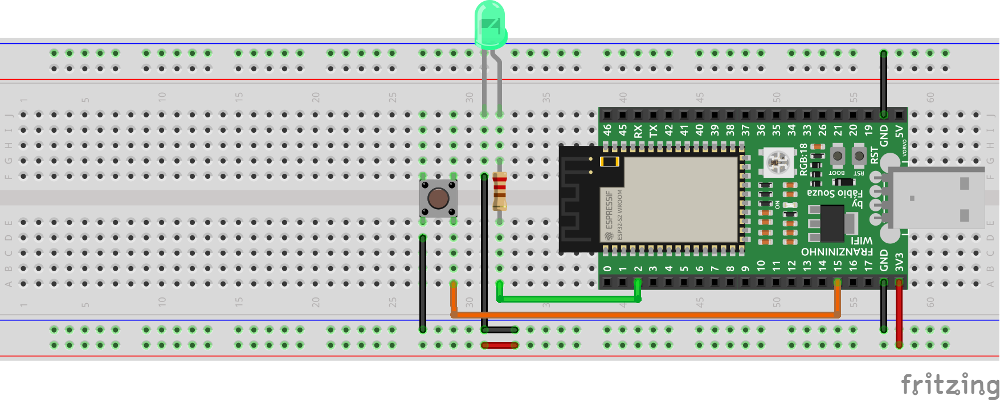
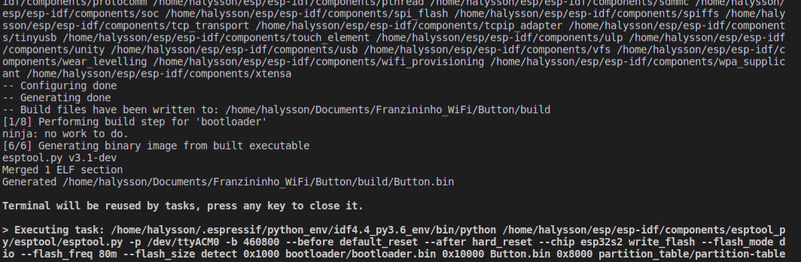
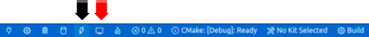
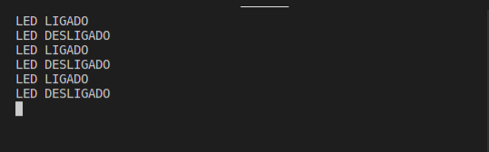
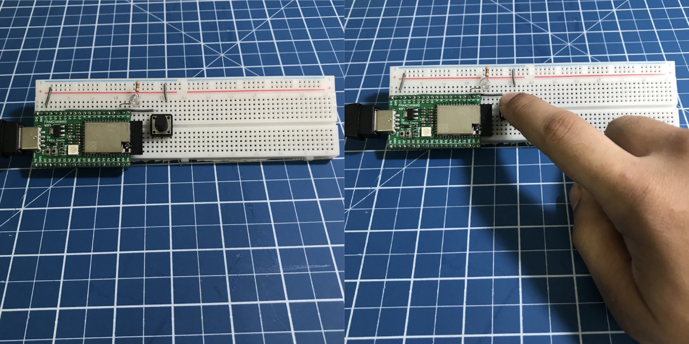

Seguindo nas aplicações com o ESP-IDF naa placa Franzininho WiFi vamos dar continuidade aos trabalhos com o periférico de Entrada/Saída de Propósito Geral ou do inglês General Purpose Input/Output (GPIO) . O objetivo deste texto é apresentar um exemplo de projeto para configurar os pinos como entrada digital. Ao final, estaremos preparados para manipular tanto as saídas digitais, vista anteriormente, quanto às entradas de digitais.
Recursos Necessários
Os materiais necessários para realizar esse exemplo são:
- Placa Franzininho WiFi;
- Protoboard;
- Botão ou chave táctil;
- LED;
- Resistor de 220 ou 330 Ohm;
- Cabos Jumpers;
- Computador com ESP-IDF instalado e configurado.
Recursos Necessários
Os materiais necessários para realizar esse exemplo são:
- Placa Franzininho WiFi;
- Protoboard;
- Botão ou chave táctil;
- LED;
- Resistor de 220 ou 330 Ohm;
- Cabos Jumpers;
- Computador com ESP-IDF instalado e configurado.
Desenvolvimento
Nesse artigo vamos apresentar um exemplo de projeto utilizando as duas funções do periférico GPIO: entrada digital e saída digital. Na entrada digital vamos realizar a leitura do botão táctil e armazenar seu estado em uma variável que irá interagir com o monitor e um LED externo, atuando como uma saída digital que irá nos indicar o estado atual do botão.
O programa desenvolvido possibilita utilizar duas topologias de circuito : pull up ou pull down, para mais informações sobre essas topologias acesse os links referente a cada circuito. Nesse exemplo de projeto iremos utilizar a topologia com o pull up interno do processador, desta forma deve-se observar os comentários ao longo do código a fim de habilitar ou desabilitar as topologias de circuito.
Na placa Franzininho WiFI temos 38 pinos programáveis com o periférico GPIO, encorajamos aos leitores que alterem o código da forma como achar necessário e praticar a codificação do programa a fim de consolidar o conhecimento adquirido.
Esquemático
Para darmos início ao projeto é importante realizar a montagem do circuito em protoboard observando com cuidado as conexões, iremos conectar um dos terminais do resistor no GPIO 2 e outro no LED externo por fim ligamos a GPIO 15 no botão táctil. Abaixo segue o esquemático proposto:

Código
O programa desenvolvido possui uma estrutura bem simples e não é necessário acrescentar nenhuma biblioteca, apenas a manutenção dos arquivos de cabeçalho já presentes no projeto. Ao criar um novo projeto no IDF automaticamente já temos arquivos configurados e prontos para programação do dispositivo, desta forma digite e comente as linhas do seguinte código no arquivo main.c :
/*
Autor : Halysson Junior
Data: 31/03/21
Descrição:
Neste exemplo utilizou-se um botão táctil (entrada digital) para acionar um LED (saída digital)
e mostra seu estado no terminal.
*/
// Inclusão arquivos de cabeçalho
#include <stdio.h>
#include "freertos/FreeRTOS.h"
#include "freertos/task.h"
#include "driver/gpio.h"
#include "sdkconfig.h"
// Definições de Pinos
#define BTN 15
#define LED 2
// Definição de habilitação (PULLUP / PULLDOWN)
#define PULLUP
// #define PULLDOWN (Para habilitar pulldown descomente aqui e comente -> " #define PULLUP ")
// Definições de estado lógico (caso altere para pulldown, deve-se inverter os estado lógicos)
#define ON 1
#define OFF 0
void app_main(void){ // Main
gpio_pad_select_gpio(LED);
gpio_set_direction(LED,GPIO_MODE_OUTPUT);// onfigura LED como saída digital
gpio_pad_select_gpio(BTN);
gpio_set_direction(BTN,GPIO_MODE_INPUT); // Configura LED como saída digital
#ifdef PULLDOWN // Habilita pulldown
gpio_pulldown_en(BTN);
gpio_pullup_dis(BTN);
#endif
#ifdef PULLUP // Habilita pullup
gpio_pullup_en(BTN);
gpio_pulldown_dis(BTN);
#endif
// Váriavel Local
bool last_state_btn = 0; // Armazena o último estado do botão
while (1) { // Loop
// Váriavel Local
bool state_btn = gpio_get_level(BTN); // Leitura do botão
if(!state_btn && !last_state_btn) {
gpio_set_level(LED,ON); // Se botão for zero então ... liga LED
printf("LED LIGADO"); // Mostra informação no monitor "LED LIGADO"
last_state_btn = true; // Botão pressionado
}
else if(state_btn && last_state_btn){
gpio_set_level(LED,OFF); // Senão... desliga LED
printf ("LED DESLIGADO"); // Mostra informação no monitor "LED DESLIGADO"
last_state_btn = false; // Botão solto
}
vTaskDelay(1/ portTICK_PERIOD_MS); // Rotina de Delay de 1 segundo
fflush(stdout); // Descarrega os buffers de saída de dados
}// endLoop
}// endMain
Você encontra o projeto completo na documentação da Franzininho: Button
Caso ainda não tenha instalado e configurado o IDF no seu computador ou tenha dúvidas sobre as ferramentas, acesse o tutorial de instalação (Clique Aqui).
Compilação
Após a codificação vamos compilar o código, mas antes selecione o set-target para ESP 32-S2:
idf.py set-target esp32s2
Ao final da compilação o resultado final deve ser semelhante à imagem mostrada abaixo, em caso de erros retorne os passos anteriores e revise seu código.

Após a etapa de compilação vamos enviar o código fonte para nossa placa, no editor pressione o ícone abaixo e aguarde alguns segundos para assim dar início ao programa “Button”(seta preta) e para vermos a saída de dados do nosso projeto clique no ícone no formato de monitor (seta vermelha):

Resultados
Finalizando o exemplo de projeto o leitor deve ter observado que no programa Button, foram utilizadas as estruturas de condição IF / ELSE IF para interagir com o estado atual do botão, adicionou-se às uma nova label nativa para indicar as entradas digitais (GPIO_MODE_INPUT) e as funções para indicar topologia do circuito ( gpio_pullup_en()/gpio pulldown_dis()) utilizado e verificar a leitura digital no pino definido no cabeçalho do código.
Abaixo segue o resultado final dos dados de saída no monitor: 
Abaixo segue o nosso circuito do nosso projeto:

Conclusão
Nesse projeto concluímos o estudo do periférico base para iniciar no mundo dos microcontroladores, pois a partir desse conhecimento adquirido podemos reciclar para as outras famílias do ESP32, como também em outros chips baseados na linguagem C para estruturar seu programa. Como mencionado na seção de Desenvolvimento, este segundo artigo deseja consolidar o conhecimento nesse periférico (GPIO), por tanto deixo o desafio de criar um contador de pulsos de 0 até 10 e reiniciado sempre quando forma maior que 10, ao final de cada contagem deve-se acionar um LED e mostrar quantas contagens já foram feitas. Desejo sorte àqueles que irão realizar o desafio e bons estudos, que a força esteja com todos nós.